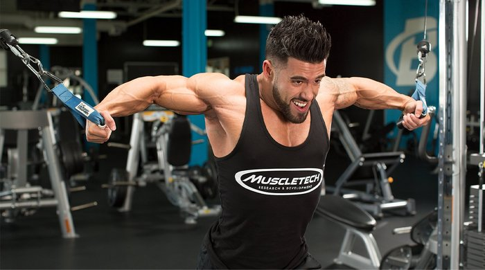
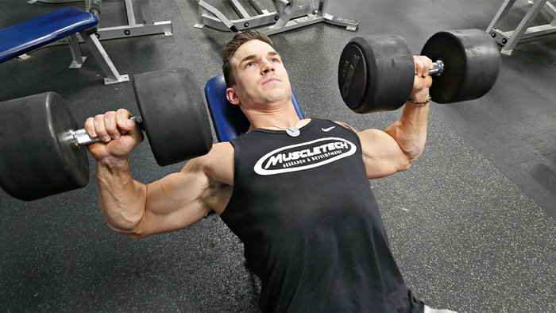
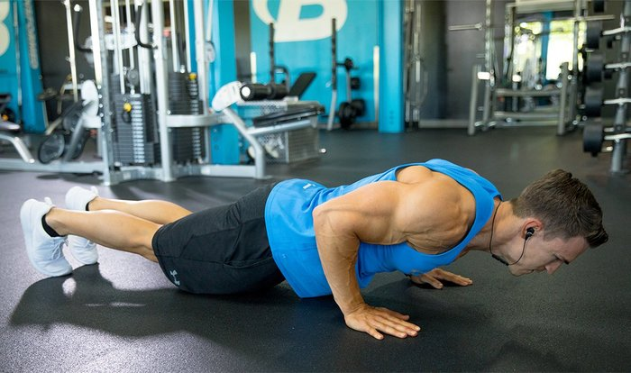
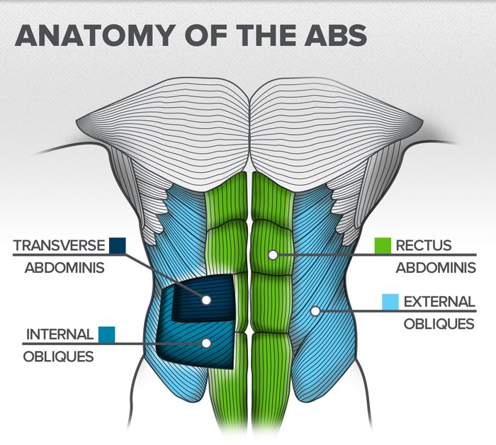
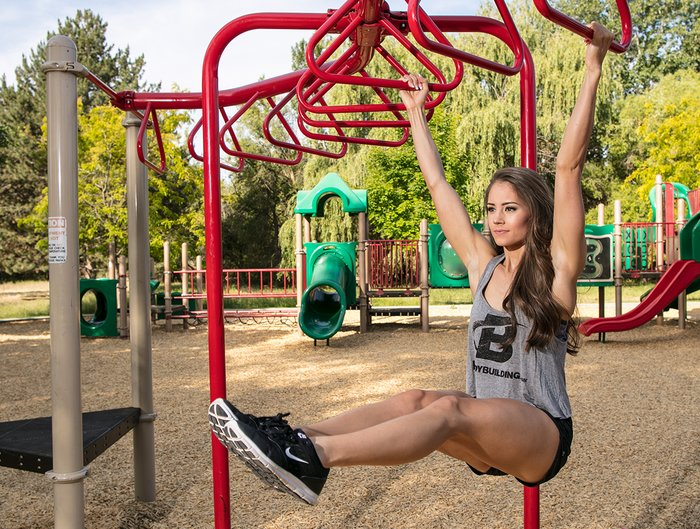

Most guys spend far too much time chatting between exercises, leading to a much longer workout than necessary. To stay on-task at the gym and get an efficient workout in, you should time your rest periods. Wear a stopwatch, and set a timer to beep when it is time to attack the weights again.
How long you rest between exercises is completely dependent upon your goals and your individual workout. For instance, heavier workouts may require a few minutes between exercises, whereas workouts designed to strictly increase size should feature shorter rest periods, according to the Journal of Strength and Conditioning. To maintain a high output, you need to rest enough to allow your muscles a chance to recover.
To determine how long you need to rest during your workout, follow the guidelines below:
Goal: Muscular endurance
Reps: 12-20
Rest time: 30-45 seconds
Goal: Muscular hypertrophy
Reps: 6-12
Rest time: 60-90 seconds
Goal: Muscular strength
Reps: 3-5
Rest time: 2-4 minutes
Goal: Muscular power
Reps: 1-3
Rest time: 3-5 minutes
Do not think that this time is only meant for complete rest. Make use of these extra minutes by foam-rolling tight muscles, working opposing muscle groups, or refining and focusing your technique for the next set.
Some people say one set is fine if you break down the muscle. Others believe in 10-12 sets and some do as many as 20 sets per body part. The bottom line to this is you have to be the one to determine which is best for you.
This is a question that I see a lot on many messageboards. Some people say one set is fine if you break down the muscle. Others believe in 10-12 sets and some do as many as 20 sets per body part! The bottom line to this is that you have to be the one to determine what is best for you.
Plateau PreventionAs you may have read in my previous articles, I believe the best way to avoid plateaus is to keep your body guessing. One week I may do 8-10 sets per body part, then the next do 20 sets. This way my body never gets accustomed to any certain one. I am constantly growing because of this way of training.
What's A Plateau?A level of attainment or achievement in weight loss or bodybuilding where one gets "stuck in a rut", barring further progress or noticable results. As obvious as it may seem, if you continue to do the same thing, you will continue to get the same results. Click here for tips on breaking through plateaus.
The main rule to remember is to always listen to your body. If you don't feel like you can do 20 sets then don't. Never risk an injury for the sake of squeezing out a few more sets.
One Set Vs. Multiple SetsI have seen where a lot of people believe that you can do just one set of each exercise, if performed properly, and it will do as much good as 5 sets per exercise.
Well, this has never worked for me, honestly, but I do recommend to anyone to go ahead and give it a shot. What works for one may not work for another. Lee Priest believes in doing 20 sets per body part where Dorian Yates believed in doing 1 or 2 sets per exercise.
Not that we don't love training everything in our split (yeah, even legs), but man, there's nothing like chest day. Combine a prominent muscle group that tends to develop quickly with the primal feel of lying back and pressing a heavy weight, and you've got yourself a fun day at the gym.
Even so, we can all use as much advice and guidance as we can get on crafting our pecs to their true potential. That's where these five tips come in. They cover everything from the best way to start your workout (hint: it's not benching) to unique exercises you may never have heard of before. Armed with these tips, your chest workouts should be more effective than ever.
1. Start With A Fly, Not A PressStarting chest workouts with a press seems intuitive, and it often becomes a habit. The thing is, though, doing flyes first makes more sense. Flyes gives you a deep stretch at the bottom and a high-quality contraction at the top, and the concentration involved in maintaining your form activates your mind-muscle connection right off the bat.
This isolation movement also pulls plenty of blood into the muscle, priming your pump. As for which fly you should do, just about any variation will work, from dumbbells at any bench angle, to cables, to a TRX Suspension Trainer, to the pec-deck machine.
Svend Press: This exercise is not about the weight. It's about squeezing your arms together and forcefully contracting your pectorals as you press your hands together. With that in mind, go light; don't try 45s, or even 10s, but start with 2-1/2 or 5-pound plates until you feel a contraction from your outer pecs to the middle of your chest with each rep. As a starting point, try 5-8 reps for 2-3 sets, holding the contraction for 10 seconds, then expanding that time over the following weeks and months.
Bodyweight Fly: This exercise will rock your pecs and your core. You'll need some floor space and dumbbells or barbells that allow the plates to spin. If you don't have access to either of those, use gliding discs or towels on a smooth floor.
To begin, get into a push-up position with your hands on the barbells or dumbbells (or discs or towels) instead of the floor, then slowly allow them to roll out to the sides as you lower your torso to the floor. When you get as low as you can handle, reverse the motion, flexing your pecs throughout to maintain control of your ascent and descent.
2. Press At Many AnglesThe chest will develop exactly how you stimulate it, which is exactly why so many guys who do nothing but the flat bench walk around with thick middle pecs and flat-as-a-board upper pecs. It's a bad look, but easily rectified by a steady dose of incline and decline presses.
If you're working with a typical adjustable bench, you have more options at your disposal than you might assume, with every click higher or lower giving you a new angle to press from. (The difference between a 45-degree and a 30-degree incline is significant when it comes to muscle-fiber stimulation.) As you adjust the bench, keep one factor in mind: The higher the angle, the more the front delts fire. So, to help keep the focus on the pecs, pull down your shoulder blades and expand your chest as you rep.
Single-Arm Flat Dumbbell Press: The typical press involves both arms, which allows you to handle more weight. This is a good thing, of course, but isolateral (i.e., single arm) presses have their value as well. Doing presses one arm at a time helps balance development between a stronger and weaker side, while also changing how the muscles fire (meaning more overall stimulation). As a bonus, doing the press isolaterally engages your core, too.
To begin this exercise, hold two dumbbells in the down position, then do your reps one arm at a time. Either alternate arms with each rep or do all your reps per set for one arm, then switch to the other arm.
3. Hold It To Hit ItAs a rule, doing reps involves establishing a cadence by keeping the weight constantly moving at an even pace. You can also do one-second pauses at the peak contraction—or go a little crazier and do isometric holds. Try holding a contraction for 15-30 seconds. If you're totally nuts, just hold on until you can't hold on any longer.
Doing the isometric cable iron cross is a good way to subject yourself to some serious pec punishment. Perform a set of cable cross-overs per usual. At the end of the set, return your arms to the up position, loosen your grip on the handles and count to five. Now tighten your grip and pull the handles down to the finish position and hold them there for as long as you can. Leave just enough energy in the tank to be able to return to the starting position without the weights crashing down onto the stacks.
4. Put The Weight Of Your Own Body To WorkThe push-up and dip are basic moves, but that doesn't limit their effectiveness. Either one makes a great workout warm-up or finisher, and with some alterations, they can become extremely intense. Consider push-ups: You can elevate your feet on a step or bench to emphasize the upper pecs, or put your hands on a step or bench, with your feet on the floor, to hit the lower pecs. To add resistance, wear a weighted vest or wrap a resistance band around your back while holding the ends in each hand.
During a rep, you can also play with the tempo, slowing down or doing explosive ups, a technique in which your hands leave the floor (much like a clap push-up). You can even do multiple styles at once in one vicious dropset finisher: Start doing push-ups with your feet elevated to failure, then bring your feet down and do normal push-ups. When you hit failure again, put your knees on the floor and try to get a few more reps. Finally, stand up, lean against a wall, and go until you can't go anymore.
Another finishing option? If you're getting bored with regular push-ups, the following variant will help you dial in your pecs.
Clock Push-Up: Perform a traditional push-up, then rotate your body to the right in a clockwise direction using your hips as the pivot point. Perform another push-up, and rotate again. If you start at what would be the 12 on a clock, the next position would be 1, then 2, and so on until you make your way all the way around and end up facing the same direction as you started. For an added challenge, "hop" your body into position each time. On the second round, go in a counterclockwise direction, rotating to the left instead of to the right on each rep.
When it comes to dips, you target the chest by leaning forward instead of keeping your torso straight up and down, which works the triceps more than the chest. Once you're proficient in bodyweight dipping, start adding weight. You can either use a weighted vest, a dip belt with plates attached, or get gnarly and hang some chains around your neck.
5. Take A Giant LeapSometimes the party maxim, "the more the merrier," applies to chest training, too. By that we mean putting two or more exercises together, back to back, with no rest in between. MuscleTech-sponsored athlete and Team Bodybuilding.com member Abel Albonetti is a believer in this approach and is known to include a superset and triset as part of his routine.
We women spend a lot of time designing workouts that properly target muscle groups like quads, glutes, and shoulders. We pay careful attention to exercise selection, periodization, frequency, intensity, and tempo. But when it comes to ab training, we usually just toss a random movement or two at the end of our workout and call it good. You can do better than that.
Making these changes to your program that will get you the solid core you're after. Get moving now; bikini and tank-top season is just around the corner!
The Ab Exercise You Shouldn't Be DoingI'm going to take a wild guess and assume that while you might want good abs, you don't want a thicker waist. If that's the case, avoid performing weighted side bends.
The problem with this exercise is that it directly targets the oblique muscles with large amounts of resistance. To understand why this is a "negative," you need to understand a bit of abdominal anatomy and how the obliques function.
The obliques are two different muscle groups (internal and external obliques) that originate from the lateral (side) portion of your lower ribs and insert into the linea alba, pubic tubercle, and the anterior (front) portion of the iliac crest. The obliques wrap around your sides and help you rotate and bend your torso, and help with your spinal stability.
Normally, the obliques are visible only when you start getting rid of layers of body fat. But targeting these muscles directly with added resistance makes them bigger. Because the obliques are positioned mainly along the sides of your torso, the effect is to actually thicken your waist. Probably not the effect you're going for.
It's important to note that the weighted side bend isn't a bad exercise; in fact, many people like it because it strengthens your core, and some lifters actually want to increase the size of their waist. But if you're looking for that hourglass figure, you're better off skipping this move on ab day.
Ab Exercises To Whittle Your WaistTarget your heavier, added resistance exercises on your main ab muscles (the rectus abdominis or "six-pack muscles") themselves. You can still do exercises that target the obliques, but ditch the added resistance and stick to higher volume (more reps) that don't add mass.
Here are a few of my favorite exercises to light up your core up without bulking up your waist:
Lying leg raise - Decline sit-up with twist (unweighted) - Hanging leg raise - Stability-ball pot stir How Often Should You Train Abs?
If you regularly do compound movements like lunges, squats, and deadlifts, you're most of the way there. These exercises involve a good deal of core engagement and stabilization, so you're getting a good ab workout without doing any ab-specific exercises. But if you want to get your abs in shape for summer, consider doing one or two of these ab exercises a couple of times per week.
There's absolutely no reason you need to have a full "core day." If you start now by working these ab exercises into your regular program (and avoiding weighted side bends), you'll have a more defined core, and your summer body will be ready to go!
If seafood is on your menu, it's probably a beautiful pink piece of seared salmon or a flaky piece of tilapia. But did you know there are three delicious, readily available seafood options even higher in protein per bite? Break out of your seafood rut, and try one of these high-protein options today!
Protein Power: 25 grams per 3-ounce (cooked) serving
This is not your average canned tuna. Yellowfin tuna is a premium option, with such a large amount of protein per serving that only specialty cans can handle it! On a serious note, yellowfin tuna provides a boatload of protein per bite. While I prefer to eat mine fresh, canned varieties make eating this fish a convenient alternative to regular albacore tuna.
Need to Know: When possible, look for troll- or pole-caught tuna, which are the most sustainable options.
Protein Power: 25 grams per 3-ounce (cooked) serving
Octopus is becoming increasingly popular, and for good reason: It's a lean source of white meat rich in protein. Yes, you will be able to find it at your local grocer, though I recommend seeking out a fishmonger instead. If your goal is to pack on muscle, you'd be a sucker not to reel it in for its protein windfall.
Need to Know: Frozen octopus has an advantage over fresh, because the subzero process works to help tenderize the meat. Try grilling your octopus to infuse a smoky flavor that compliments this cephalopod well.
Protein Power: 23 grams per 3-ounce (cooked) serving
If you're a fan of white, flaky fish, order halibut next time you dine out. This buttery fish is full of protein, yet remains low in fat.
Among white-flesh fish species, halibut reigns supreme when it comes to the protein you need to build muscle like a champ. Each 3-ounce serving also has a mere 2 grams of fat, making halibut an even better catch of the day.
Need to Know: Pacific halibut is considered a more sustainable choice than Atlantic.